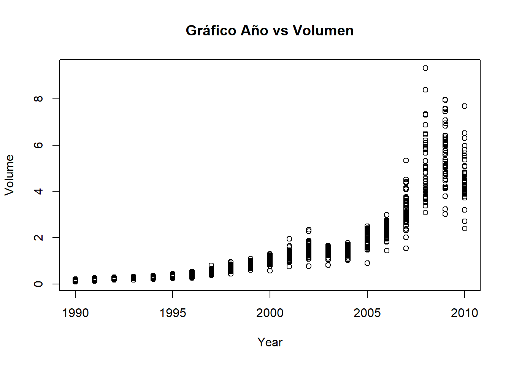
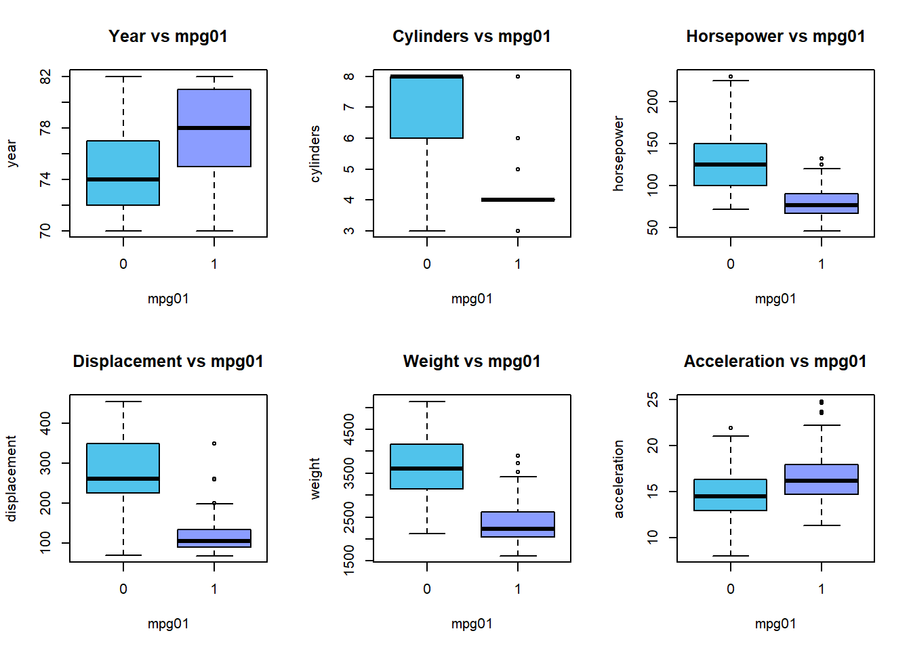
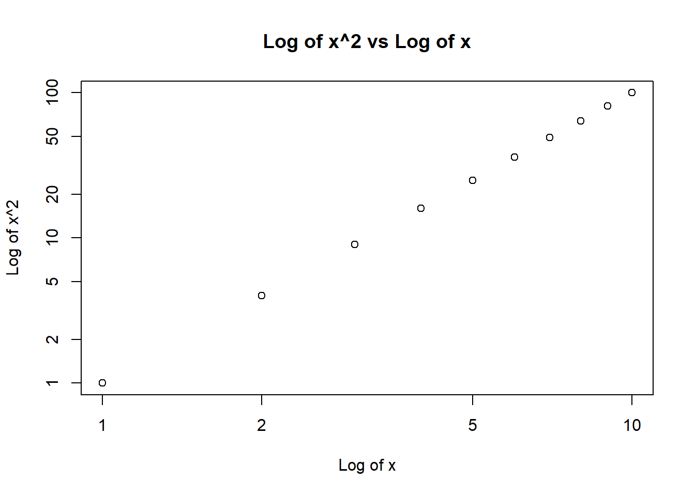
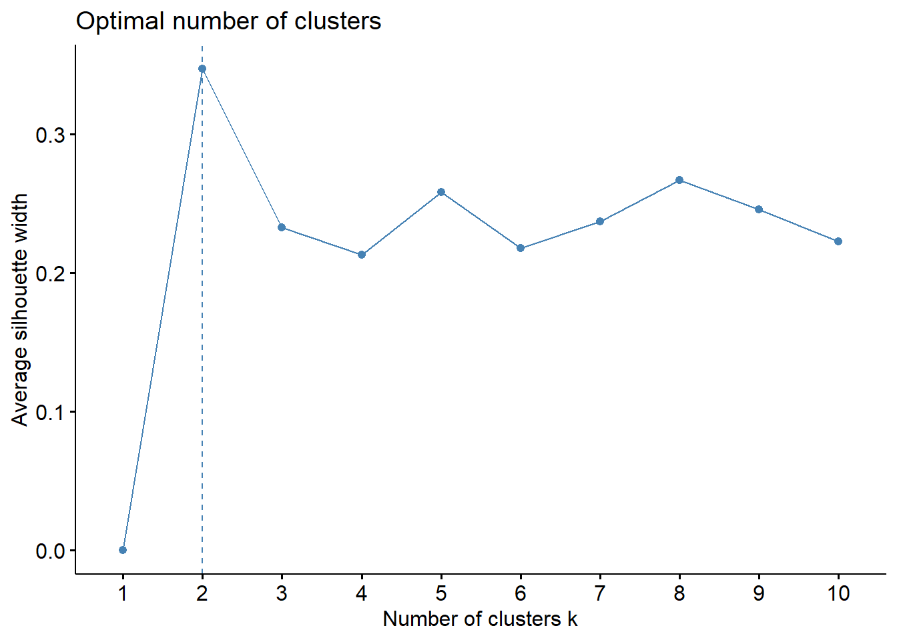
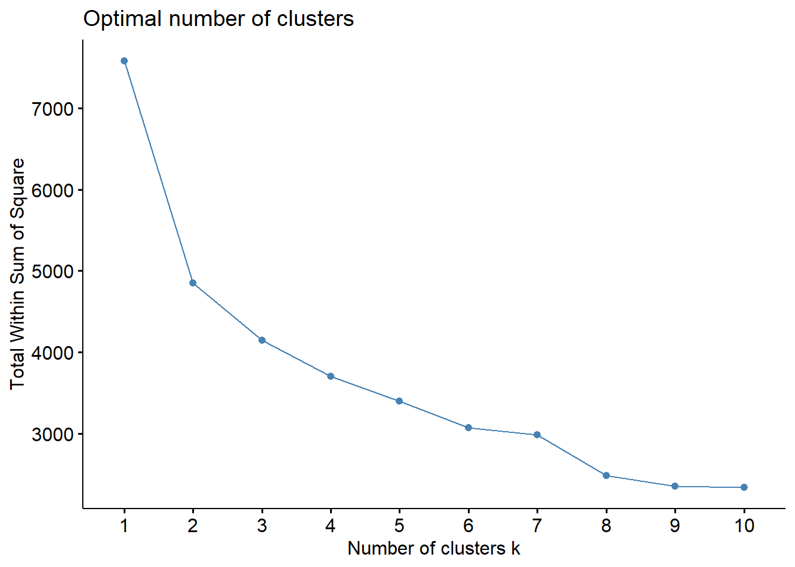
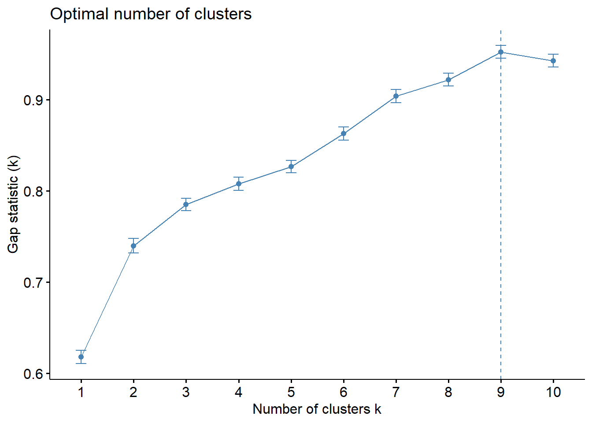

Punto 10
Esta pregunta debe responderse utilizando el conjunto de datos semanal, que es parte del paquete ISLR. Estos datos son similares en naturaleza a Datos de mercado del laboratorio de este capítulo, excepto que contiene 1.089 devoluciones semanales durante 21 años, desde principios de 1990 hasta finales de 2010.
(a) Produzca algunos resúmenes numéricos y gráficos de los datos en Weekly. ¿Parece haber algún patrón?
library(ISLR)
data("Weekly")
summary(Weekly)## Year Lag1 Lag2 Lag3
## Min. :1990 Min. :-18.1950 Min. :-18.1950 Min. :-18.1950
## 1st Qu.:1995 1st Qu.: -1.1540 1st Qu.: -1.1540 1st Qu.: -1.1580
## Median :2000 Median : 0.2410 Median : 0.2410 Median : 0.2410
## Mean :2000 Mean : 0.1506 Mean : 0.1511 Mean : 0.1472
## 3rd Qu.:2005 3rd Qu.: 1.4050 3rd Qu.: 1.4090 3rd Qu.: 1.4090
## Max. :2010 Max. : 12.0260 Max. : 12.0260 Max. : 12.0260
## Lag4 Lag5 Volume
## Min. :-18.1950 Min. :-18.1950 Min. :0.08747
## 1st Qu.: -1.1580 1st Qu.: -1.1660 1st Qu.:0.33202
## Median : 0.2380 Median : 0.2340 Median :1.00268
## Mean : 0.1458 Mean : 0.1399 Mean :1.57462
## 3rd Qu.: 1.4090 3rd Qu.: 1.4050 3rd Qu.:2.05373
## Max. : 12.0260 Max. : 12.0260 Max. :9.32821
## Today Direction
## Min. :-18.1950 Down:484
## 1st Qu.: -1.1540 Up :605
## Median : 0.2410
## Mean : 0.1499
## 3rd Qu.: 1.4050
## Max. : 12.0260Obtenemos la matriz de correlación sin incluir la variable Direction:
cor(Weekly[,-9])## Year Lag1 Lag2 Lag3 Lag4
## Year 1.00000000 -0.032289274 -0.03339001 -0.03000649 -0.031127923
## Lag1 -0.03228927 1.000000000 -0.07485305 0.05863568 -0.071273876
## Lag2 -0.03339001 -0.074853051 1.00000000 -0.07572091 0.058381535
## Lag3 -0.03000649 0.058635682 -0.07572091 1.00000000 -0.075395865
## Lag4 -0.03112792 -0.071273876 0.05838153 -0.07539587 1.000000000
## Lag5 -0.03051910 -0.008183096 -0.07249948 0.06065717 -0.075675027
## Volume 0.84194162 -0.064951313 -0.08551314 -0.06928771 -0.061074617
## Today -0.03245989 -0.075031842 0.05916672 -0.07124364 -0.007825873
## Lag5 Volume Today
## Year -0.030519101 0.84194162 -0.032459894
## Lag1 -0.008183096 -0.06495131 -0.075031842
## Lag2 -0.072499482 -0.08551314 0.059166717
## Lag3 0.060657175 -0.06928771 -0.071243639
## Lag4 -0.075675027 -0.06107462 -0.007825873
## Lag5 1.000000000 -0.05851741 0.011012698
## Volume -0.058517414 1.00000000 -0.033077783
## Today 0.011012698 -0.03307778 1.000000000De acuerdo a la matriz de correlación descrita anteriormente, la correlación positiva más alta de 0.842, se da entre las variables Año y Volumen por lo tanto se decide hacer un gráfico para estas dos variables.
plot(Weekly$Year,Weekly$Volume, xlab = "Year", ylab = "Volume",main = "Gráfico Año vs Volumen",type = "p")
En el gráfico se puede evidenciar que la variable Volume crece a media que el tiempo aumenta, por lo tanto el promedio diario de acciones negociadas en mlies de millones ha estado en crecimiento en los años 1990 y 2010.
library(plotly)
plot_ly(Weekly,y=~Volume,x=~Direction,type="box")En el boxplot de Volume vs Direction se evidencia poca variabilidad entre los dos niveles de la variable Direction, Down y Up debido a la variable Volume, además se puede ver alta dispersión entre los puntos y parece no existir grandes diferencias. El gráfico es interactivo por lo tanto se pueden conocer los valores importantes dentro del gráfico solo con pasar el cursor sobre el.
(b) Utilice el conjunto de datos completo para realizar una regresión logística con Direction como respuesta y las cinco variables de Lag más Volume como predictores. Use la función de resumen para imprimir los resultados. ¿Alguno de los predictores parece ser estadísticamente significativo? Si es así,¿cuáles?
El modelo de regresión logístico ajustado es el siguiente:
mod1 <- glm( Direction ~ Lag1+Lag2+Lag3+Lag4+Lag5+Volume,data = Weekly,family = "binomial")
summary(mod1)##
## Call:
## glm(formula = Direction ~ Lag1 + Lag2 + Lag3 + Lag4 + Lag5 +
## Volume, family = "binomial", data = Weekly)
##
## Deviance Residuals:
## Min 1Q Median 3Q Max
## -1.6949 -1.2565 0.9913 1.0849 1.4579
##
## Coefficients:
## Estimate Std. Error z value Pr(>|z|)
## (Intercept) 0.26686 0.08593 3.106 0.0019 **
## Lag1 -0.04127 0.02641 -1.563 0.1181
## Lag2 0.05844 0.02686 2.175 0.0296 *
## Lag3 -0.01606 0.02666 -0.602 0.5469
## Lag4 -0.02779 0.02646 -1.050 0.2937
## Lag5 -0.01447 0.02638 -0.549 0.5833
## Volume -0.02274 0.03690 -0.616 0.5377
## ---
## Signif. codes: 0 '***' 0.001 '**' 0.01 '*' 0.05 '.' 0.1 ' ' 1
##
## (Dispersion parameter for binomial family taken to be 1)
##
## Null deviance: 1496.2 on 1088 degrees of freedom
## Residual deviance: 1486.4 on 1082 degrees of freedom
## AIC: 1500.4
##
## Number of Fisher Scoring iterations: 4Con el summary se observa que la variable Lag2 con un P-valor de 0.0296 es estadisiticamente significativa si se toma un nivel de significancia de referencia de 0.05.
(c) Calcule la matriz de confusión y la fracción general de la predicciones correctas. Explica lo que dice la matriz de confusión sobre los tipos de errores cometidos por la regresión logística.
Matriz de confusión:
prediction <- mod1$fitted.values
pred<- rep("Down",length(prediction))
pred[prediction > 0.5]<- "Up"
table(pred,Weekly$Direction)##
## pred Down Up
## Down 54 48
## Up 430 557((557+54)/(54+48+430+557))*100## [1] 56.10652Los elementos de una de las diagonales de la mtriz de confusión en los que el modelo ajustado predijo correctamente que el mercado tendría un rendimiento positivo en 557 días y un rendimiento negativo en 54 días, en total 611 predicciones correctas, el modejo predijo correctamente el 56.11% de las veces. La tasa de error es de 100-56.11 = 43.89%.
(d) Ahora ajuste el modelo de regresión logística usando un período de datos de entrenamiento desde 1990 hasta 2008, con Lag2 como el único predictor. Calcule la matriz de confusión y la fracción general de predicciones correctas para los datos retenidos (es decir, los datos de 2009 y 2010).
Modelo ajustado usando Lag2 como único predictor:
train <- subset.data.frame(x = Weekly,subset = Year < 2009)
test2009_2010 <- subset.data.frame(Weekly,subset = Year >=2009)
mod2 <- glm(Direction ~ Lag2 ,data = train,family = binomial)
summary(mod2)##
## Call:
## glm(formula = Direction ~ Lag2, family = binomial, data = train)
##
## Deviance Residuals:
## Min 1Q Median 3Q Max
## -1.536 -1.264 1.021 1.091 1.368
##
## Coefficients:
## Estimate Std. Error z value Pr(>|z|)
## (Intercept) 0.20326 0.06428 3.162 0.00157 **
## Lag2 0.05810 0.02870 2.024 0.04298 *
## ---
## Signif. codes: 0 '***' 0.001 '**' 0.01 '*' 0.05 '.' 0.1 ' ' 1
##
## (Dispersion parameter for binomial family taken to be 1)
##
## Null deviance: 1354.7 on 984 degrees of freedom
## Residual deviance: 1350.5 on 983 degrees of freedom
## AIC: 1354.5
##
## Number of Fisher Scoring iterations: 4Matriz de confusión:
prediction2 <- predict(object = mod2,newdata = test2009_2010,type = "response")
pred2<- rep("Dow",length(prediction2))
pred2[prediction2 > 0.5]<- "Up"
table(pred2,test2009_2010$Direction)##
## pred2 Down Up
## Dow 9 5
## Up 34 56((9+56)/(9+5+34+56))*100## [1] 62.5Usando la matriz de confusión y los datos de prueba, se puede observar que el porcentaje de predicciones correctas es 62.5%. La tasa de error para este modelo ajustado es 100-62.5 = 37.5%. Además se puede percibir que cuando el mercado sube, el modelo predice correctamente 91.8% de las veces y cuando baja predice correctamente un 79.6% de las veces.
(e) Repita (d) usando LDA
Ajustamos el modelo usando LDA:
library(MASS)
modlda <- lda(Direction~Lag2,data = train)
modlda## Call:
## lda(Direction ~ Lag2, data = train)
##
## Prior probabilities of groups:
## Down Up
## 0.4477157 0.5522843
##
## Group means:
## Lag2
## Down -0.03568254
## Up 0.26036581
##
## Coefficients of linear discriminants:
## LD1
## Lag2 0.4414162Matriz de confusión:
prediction_LDA <- predict(object = modlda,newdata = test2009_2010)
table(prediction_LDA$class,test2009_2010$Direction)##
## Down Up
## Down 9 5
## Up 34 56((9+56)/(9+5+34+56))*100## [1] 62.5La matriz de confusión ajustando el modelo con LDA es la misma que cuando se ajusta con regresión lógistica,podemos concluir que el porcentaje predicciones correctas es de 62.5% de las veces. La tasa de error es de 37.5%.
(f) Repita (d) usando QDA
Ajustamos el modelo usando QDA:
mod_QDA <- qda(Direction~Lag2,data = train)
mod_QDA## Call:
## qda(Direction ~ Lag2, data = train)
##
## Prior probabilities of groups:
## Down Up
## 0.4477157 0.5522843
##
## Group means:
## Lag2
## Down -0.03568254
## Up 0.26036581prediction_QDA <- predict(mod_QDA,newdata = test2009_2010)
table(prediction_QDA$class,test2009_2010$Direction)##
## Down Up
## Down 0 0
## Up 43 61((61)/(61+43))*100## [1] 58.65385Con la tabla de confusión y los datos de prueba, se concluye que el porcentaje de predicciones acertadas es de 58.65%. La tasa de error con los datos de prueba es de 41.35%. Además cuando el mercado sube, el modelo predice correctamente 100% de la veces, se debe tener en cuenta que este modelo toma como referencia el valor Up de Direction.
(g) Repita (d) usando Knn con k=1.
Matriz de confusión:
library(class)
train.x <- as.matrix(train$Lag2)
test.x <- as.matrix(test2009_2010$Lag2)
train.Direction <- train$Direction
set.seed(23)
prediction_knn <- knn(train = train.x,test = test.x,cl = train.Direction,k = 1)
table(prediction_knn,test2009_2010$Direction)##
## prediction_knn Down Up
## Down 21 29
## Up 22 32((21+32)/(21+29+22+32))*100## [1] 50.96154En esta tabla de confusión, podemos concluir que el porcentaje de predicciones correctas es de 50.962% de las veces.
(h) ¿Cuál de estos métodos parece proporcionar los mejores resultados en estos datos?
Los modelos ajustados con regresión lógistica y LDA tienen tasas de error mas pequeña, además no hay muchas diferencias entre esos dos modelos por lo tanto usando cualquiera de estso dos métodos se tendrían mejores resultados que con los demás.
(i) Experimente con diferentes combinaciones de predictores, incluyendo posibles transformaciones e interacciones, para cada una de las métodos. Informe las variables, el método y la matriz de confusión asociada. Matriz que parece proporcionar los mejores resultados en el contenido fuera de datos. Tenga en cuenta que también debe experimentar con valores para K en el clasificador KNN.
Como se determinó en un literal anterior, la variable más significativa es Lag2 por lo tanto esta se mantiene fija en los proximos nuevos modelos ajustados. Adicionamos la variable Lag1 puesto que tiene un valor p más pequeño y podría estar dentro de los límites de significancia si se toma como valor de referencia de 0.1.
Ajustamos el modelo con las variables Lag1 y Las2, usando el método de regresión lógistica:
train1 <- (Weekly$Year < 2009)
fit.glm3 <- glm( Direction ~ Lag1+Lag2,data = Weekly,family = "binomial", subset = train1)
probs3 <- predict(fit.glm3, test2009_2010, type = "response")
pred.glm3 <- rep("Down", length(probs3))
pred.glm3[probs3 > 0.5] = "Up"
table(pred.glm3, test2009_2010$Direction)##
## pred.glm3 Down Up
## Down 7 8
## Up 36 53((7+53)/(7+8+36+53))*100## [1] 57.69231La matriz de confusión para este caso concluye que el modelo ajustado predice correctamente el 57.69% de las veces. La tasa de error es de 42.31%.
Como en los literales anteriores los resultados usando regresión lógistica y LDA fueron muy similares, no se tendrá en cuenta ajusatrlo por el método LDA.
Ajustamos el modelo con las variables Lag1 y Lag2 usando el método de QDA:
fit.qda2 <- qda(Direction ~ Lag1 + Lag2, data = Weekly, subset = train1)
pred.qda2 <- predict(fit.qda2, test2009_2010)
table(pred.qda2$class, test2009_2010$Direction)##
## Down Up
## Down 7 10
## Up 36 51mean(pred.qda2$class == test2009_2010$Direction)*100## [1] 55.76923La matriz de confusión para este caso concluye que el modelo ajustado predice correctamente el 55.77% de las veces. La tasa de error es de 42.23%.
Ajustamos el modelo con las variables Lag1 y Lag2 usando el método de KNN:
K=10
pred.knn10 <- knn(train.x, test.x, train.Direction, k = 10)
table(pred.knn10, test2009_2010$Direction)##
## pred.knn10 Down Up
## Down 18 20
## Up 25 41mean(pred.knn10 == test2009_2010$Direction)*100## [1] 56.73077K=50
pred.knn50 <- knn(train.x, test.x, train.Direction, k = 50)
table(pred.knn50, test2009_2010$Direction)##
## pred.knn50 Down Up
## Down 20 22
## Up 23 39mean(pred.knn50 == test2009_2010$Direction)*100## [1] 56.73077K=100
pred.knn100 <- knn(train.x, test.x, train.Direction, k = 100)
table(pred.knn100, test2009_2010$Direction)##
## pred.knn100 Down Up
## Down 10 13
## Up 33 48mean(pred.knn100 == test2009_2010$Direction)*100## [1] 55.76923Para el método de KNN vemos que el porcentaje de predicción no varía mucho respecto al k elegido. De lo anterior podemos concluir que el método de regresión lósgistica y LDA tienen mejores resultados con un porcentaje de predicción más alto y tasa de error más baja.
Punto 11
En este problema, desarrollará un modelo para predecir si un determinado el automóvil obtiene un consumo de combustible alto o bajo en función de Auto en el conjunto de datos.
(a) Cree una variable binaria, mpg01, que contenga un 1 si mpg contiene un valor por encima de su mediana, y un 0 si mpg contiene un valor por debajo es la mediana Puede calcular la mediana usando median() función. Tenga en cuenta que puede resultarle útil utilizar data.frame() función para crear un único conjunto de datos que contenga tanto mpg01 como Auto en las otras variables.
library(ISLR)
attach(Auto)## The following objects are masked from Auto (pos = 6):
##
## acceleration, cylinders, displacement, horsepower, mpg, name,
## origin, weight, year## The following objects are masked from Auto (pos = 14):
##
## acceleration, cylinders, displacement, horsepower, mpg, name,
## origin, weight, year## The following object is masked from package:ggplot2:
##
## mpgset.seed(2015)
mpg01 <- rep(0, length(mpg))
mpg01[mpg > median(mpg)] <- 1
Auto1 <- data.frame(Auto, mpg01)(b) Explore los datos gráficamente para investigar la asociación entre mpg01 y las otras características. Qué características parecen ser más útiles para predecir mpg01? Gráfico de dispersión y los diagramas de caja pueden ser herramientas útiles para responder esta pregunta. Describe lod hallazgos.
Matriz de correlación:
cor(Auto1[, -9])## mpg cylinders displacement horsepower weight
## mpg 1.0000000 -0.7776175 -0.8051269 -0.7784268 -0.8322442
## cylinders -0.7776175 1.0000000 0.9508233 0.8429834 0.8975273
## displacement -0.8051269 0.9508233 1.0000000 0.8972570 0.9329944
## horsepower -0.7784268 0.8429834 0.8972570 1.0000000 0.8645377
## weight -0.8322442 0.8975273 0.9329944 0.8645377 1.0000000
## acceleration 0.4233285 -0.5046834 -0.5438005 -0.6891955 -0.4168392
## year 0.5805410 -0.3456474 -0.3698552 -0.4163615 -0.3091199
## origin 0.5652088 -0.5689316 -0.6145351 -0.4551715 -0.5850054
## mpg01 0.8369392 -0.7591939 -0.7534766 -0.6670526 -0.7577566
## acceleration year origin mpg01
## mpg 0.4233285 0.5805410 0.5652088 0.8369392
## cylinders -0.5046834 -0.3456474 -0.5689316 -0.7591939
## displacement -0.5438005 -0.3698552 -0.6145351 -0.7534766
## horsepower -0.6891955 -0.4163615 -0.4551715 -0.6670526
## weight -0.4168392 -0.3091199 -0.5850054 -0.7577566
## acceleration 1.0000000 0.2903161 0.2127458 0.3468215
## year 0.2903161 1.0000000 0.1815277 0.4299042
## origin 0.2127458 0.1815277 1.0000000 0.5136984
## mpg01 0.3468215 0.4299042 0.5136984 1.0000000Conf3x2 = matrix(c(1:6), nrow=2, byrow=TRUE)
layout(Conf3x2)
boxplot(year ~ mpg01, data = Auto, main = "Year vs mpg01",col=c("#50C3EB","#8B9DFF"))
boxplot(cylinders ~ mpg01, data = Auto, main = "Cylinders vs mpg01",col=c("#50C3EB","#8B9DFF"))
boxplot(horsepower ~ mpg01, data = Auto, main = "Horsepower vs mpg01",col=c("#50C3EB","#8B9DFF"))
boxplot(displacement ~ mpg01, data = Auto, main = "Displacement vs mpg01",col=c("#50C3EB","#8B9DFF"))
boxplot(weight ~ mpg01, data = Auto, main = "Weight vs mpg01",col=c("#50C3EB","#8B9DFF"))
boxplot(acceleration ~ mpg01, data = Auto, main = "Acceleration vs mpg01",col=c("#50C3EB","#8B9DFF"))
En los boxplot anteriores se evidencia alta variabilidad en algunas cajas, pero no hay muchos cambios entre cada una de las variables respecto a los niveles de la variable mpg01.
(c) Divida los datos en un conjunto de entrenamiento y un conjunto de prueba.
train11 <- (Auto1$year %% 2 == 0)
Auto1.train <- Auto1[train11, ]
Auto1.test <- Auto1[!train11, ]
mpg01.test <- mpg01[!train11](d) Realice LDA en los datos de entrenamiento para predecir mpg01 usando las variables que parecían más asociadas con mpg01 en (b). ¿Cuál es el error de prueba del modelo obtenido?
fit.lda1 <- lda(mpg01 ~ cylinders + weight + displacement + horsepower, data = Auto1, subset = train11)
fit.lda1## Call:
## lda(mpg01 ~ cylinders + weight + displacement + horsepower, data = Auto1,
## subset = train11)
##
## Prior probabilities of groups:
## 0 1
## 0.4571429 0.5428571
##
## Group means:
## cylinders weight displacement horsepower
## 0 6.812500 3604.823 271.7396 133.14583
## 1 4.070175 2314.763 111.6623 77.92105
##
## Coefficients of linear discriminants:
## LD1
## cylinders -0.6741402638
## weight -0.0011465750
## displacement 0.0004481325
## horsepower 0.0059035377Matriz de confusión:
pred.lda1 <- predict(fit.lda1, Auto1.test)
table(pred.lda1$class, mpg01.test)## mpg01.test
## 0 1
## 0 86 9
## 1 14 73((86+73)/182)*100## [1] 87.36264En esta tabla de confusión, podemos concluir que el porcentaje de predicciones correctas es de 87.363% de las veces. La tasa de error con los datos de prueba es de 12.637%.
(e) Realice QDA en los datos de entrenamiento para predecir mpg01 usando las variables que parecían más asociadas con mpg01 en (b). ¿Cuál es el error de prueba del modelo obtenido?
fit.qda1 <- qda(mpg01 ~ cylinders + weight + displacement + horsepower, data = Auto1, subset = train11)
fit.qda1## Call:
## qda(mpg01 ~ cylinders + weight + displacement + horsepower, data = Auto1,
## subset = train11)
##
## Prior probabilities of groups:
## 0 1
## 0.4571429 0.5428571
##
## Group means:
## cylinders weight displacement horsepower
## 0 6.812500 3604.823 271.7396 133.14583
## 1 4.070175 2314.763 111.6623 77.92105Matriz de confusión:
pred.qda1 <- predict(fit.qda1, Auto1.test)
table(pred.qda1$class, mpg01.test)## mpg01.test
## 0 1
## 0 89 13
## 1 11 69((89+69)/182)*100## [1] 86.81319En esta tabla de confusión, podemos concluir que el porcentaje de predicciones correctas es de 86.8132% de las veces. La tasa de error con los datos de prueba es de 13.1868%.
(f) Realizar regresión logística en los datos de entrenamiento para predecir mpg01 usando las variables que parecían más asociadas con mpg01 en (b). ¿Cuál es el error de prueba del modelo obtenido?
fit.glm11 <- glm(mpg01 ~ cylinders + weight + displacement + horsepower, data = Auto1, family = binomial, subset = train11)
summary(fit.glm11)##
## Call:
## glm(formula = mpg01 ~ cylinders + weight + displacement + horsepower,
## family = binomial, data = Auto1, subset = train11)
##
## Deviance Residuals:
## Min 1Q Median 3Q Max
## -2.48027 -0.03413 0.10583 0.29634 2.57584
##
## Coefficients:
## Estimate Std. Error z value Pr(>|z|)
## (Intercept) 17.658730 3.409012 5.180 2.22e-07 ***
## cylinders -1.028032 0.653607 -1.573 0.1158
## weight -0.002922 0.001137 -2.569 0.0102 *
## displacement 0.002462 0.015030 0.164 0.8699
## horsepower -0.050611 0.025209 -2.008 0.0447 *
## ---
## Signif. codes: 0 '***' 0.001 '**' 0.01 '*' 0.05 '.' 0.1 ' ' 1
##
## (Dispersion parameter for binomial family taken to be 1)
##
## Null deviance: 289.58 on 209 degrees of freedom
## Residual deviance: 83.24 on 205 degrees of freedom
## AIC: 93.24
##
## Number of Fisher Scoring iterations: 7Matriz de confusión:
probs11 <- predict(fit.glm11, Auto1.test, type = "response")
pred.glm11 <- rep(0, length(probs11))
pred.glm11[probs11 > 0.5] <- 1
table(pred.glm11, mpg01.test)## mpg01.test
## pred.glm11 0 1
## 0 89 11
## 1 11 71((89+71)/182)*100## [1] 87.91209En esta tabla de confusión, podemos concluir que el porcentaje de predicciones correctas es de 87.9121% de las veces. La tasa de error con los datos de prueba es de 12.0879%.
(g) Realice KNN en los datos de entrenamiento, con varios valores de K, en para predecir mpg01. Use solo las variables que parecían más asociado con mpg01 en (b). ¿Qué errores de prueba obtienes? ¿Qué valor de K parece tener el mejor rendimiento en este conjunto de datos?
train.X <- cbind(cylinders, weight, displacement, horsepower)[train11, ]
test.X <- cbind(cylinders, weight, displacement, horsepower)[!train11, ]
train11.mpg01 <- mpg01[train11]K=10
set.seed(210)
pred.knn11 <- knn(train.X, test.X, train11.mpg01, k = 10)
table(pred.knn11, mpg01.test)## mpg01.test
## pred.knn11 0 1
## 0 77 7
## 1 23 75((77+75)/182)*100## [1] 83.51648En esta tabla de confusión, podemos concluir que el porcentaje de predicciones correctas es de 87.9121% de las veces. La tasa de error con los datos de prueba es de 12.0879%.
K=5
set.seed(555)
pred.knn5 <- knn(train.X, test.X, train11.mpg01, k = 5)
table(pred.knn5, mpg01.test)## mpg01.test
## pred.knn5 0 1
## 0 82 9
## 1 18 73((82+73)/182)*100## [1] 85.16484En esta tabla de confusión, podemos concluir que el porcentaje de predicciones correctas es de 85.165% de las veces. La tasa de error con los datos de prueba es de 14.835%.
K=51
set.seed(22)
pred.knn51 <- knn(train.X, test.X, train11.mpg01, k = 51)
table(pred.knn51, mpg01.test)## mpg01.test
## pred.knn51 0 1
## 0 81 7
## 1 19 75((81+75)/182)*100## [1] 85.71429En esta tabla de confusión, podemos concluir que el porcentaje de predicciones correctas es de 85.7143% de las veces. La tasa de error con los datos de prueba es de 14.2857%.
K=120
set.seed(57)
pred.knn100 <- knn(train.X, test.X, train11.mpg01, k = 120)
table(pred.knn100, mpg01.test)## mpg01.test
## pred.knn100 0 1
## 0 77 7
## 1 23 75((77+75)/182)*100## [1] 83.51648En esta tabla de confusión, podemos concluir que el porcentaje de predicciones correctas es de 83.52% de las veces. La tasa de error con los datos de prueba es de 16.48%.
Se concluye que los mejores resultados están con K=5 y K=51, teniendo los porcetnajes de predicciones correctas más altas y las tasas de erro más pequeñas.
Punto 12
Este problema implica escribir funciones.
(a) Write a function, Power(), that prints out the result of raising 2 to the 3rd power. In other words, your function should compute 2^3 and print out the results.
Hint: Recall that x^a raises x to the power a. Use the print() function to output the result.
Power <- function() {
2^3
}
Power()## [1] 8(b) Cree una nueva función, Power2(), que le permita pasar cualquier dos números, x y a, e imprime el valor de x ^ a. Usted puede haga esto comenzando su función con la línea, debería poder llamar a su función ingresando, por ejemplo,en la línea de comando. Esto debería generar el valor de 3^8, a saber,6.561.
Power2 =function (x,a){Power2 (3,8)}
Power2 <- function(x, a) {
x^a
}
Power2(3, 8)## [1] 6561(c) Usando la función Power2 () que acaba de escribir, calcule \(10^3\) , \(8^{17}\) y \(131^3\).
Power2(10, 3)## [1] 1000Power2(8, 17)## [1] 2.2518e+15Power2(131, 3)## [1] 2248091(d) Ahora cree una nueva función, Power3(), que en realidad devuelve el resulta \(x^a\) como un objeto R, en lugar de simplemente imprimirlo en el pantalla. Es decir, si almacena el valor \(x^a\) en un objeto llamado resultado dentro de su función, entonces simplemente puede return() esto resultado, utilizando la siguiente línea:
return(result) La línea de arriba debe ser la última línea de su función, antes del símbolo de la }.
Power3 <- function(x , a) {
result <- x^a
return(result)
}(e) Ahora, usando la función Power3(), crea un gráfico de f(x) = x2. El eje x debe mostrar un rango de números enteros de 1 a 10, y el eje y debería mostrar x2. Etiqueta los ejes apropiadamente, y usar un título apropiado para la figura. Considere la posibilidad de mostrar el eje X, el eje Y, o ambos en la escala logarítmica. Puedes hacer esto usando log=‘’x’‘, log=’‘y’‘, o log=’‘xy’’ como argumentos para la función plot().
x <- 1:10
plot(x, Power3(x, 2), log = "xy", xlab = "Log of x", ylab = "Log of x^2", main = "Log of x^2 vs Log of x")
(f) Crear una función, PlotPower(), que permita crear un gráfico de x contra \(x^a\) para una a fija y para un rango de valores de x. Para ejemplo, si llamas a PlotPower (1:10 ,3) entonces se debe crear un gráfico con un eje x que tome valores 1, 2, . . . …10, y un eje Y que toma los valores 13, 23,…, 103.
x <- 1:10
plot(x, Power3(x, 2), log = "xy", xlab = "Log of x", ylab = "Log of x^2", main = "Log of x^2 vs Log of x")
Punto 13
Utilizando el conjunto de datos de Boston, ajustar los modelos de clasificación con el fin de predecir si un determinado suburbio tiene un índice de delincuencia superior o inferior a la mediana. Explorar la regresión logística, los modelos LDA y KNN usando varios subconjuntos de los pronosticadores. Describa sus hallazgos.
Se crea una nueva variable donde es 1 si su indice de delincuencia es mayor a la mediana y 0 si es menor, esto para la variable crim, crim no se incluye en el modelo puesto que crim01 está creada a partir de crim. Luego se divide la base de datos en dos conjuntos para entrenamiento y prueba. Se decide ajustar dos modelos con para los métodos de regresión lógistica y LDA incluyendo o no las siguientes variables: ptratio, medv, tax, rad, nox.
library(MASS)
attach(Boston)## The following objects are masked from Boston (pos = 6):
##
## age, black, chas, crim, dis, indus, lstat, medv, nox, ptratio,
## rad, rm, tax, zn## The following objects are masked from Boston (pos = 14):
##
## age, black, chas, crim, dis, indus, lstat, medv, nox, ptratio,
## rad, rm, tax, zncrim01 <- rep(0, length(crim))
crim01[crim > median(crim)] <- 1
Boston1 <- data.frame(Boston, crim01)
train13 <- 1:(length(crim) / 2)
test13 <- (length(crim) / 2 + 1):length(crim)
Boston.train <- Boston1[train13, ]
Boston.test <- Boston1[test13, ]
crim01.test <- crim01[test13]Ajustamos el modelo usando predicción lógistica, utilizando todas las varibles:
fit.glm13 <- glm(crim01 ~ . - crim, data = Boston1, family = binomial, subset = train13)## Warning: glm.fit: fitted probabilities numerically 0 or 1 occurredprobs13 <- predict(fit.glm13, Boston.test, type = "response")
pred.glm13 <- rep(0, length(probs13))
pred.glm13[probs13 > 0.5] <- 1
table(pred.glm13, crim01.test)## crim01.test
## pred.glm13 0 1
## 0 68 24
## 1 22 139((68+139)/253)*100## [1] 81.81818En la tabla de confusión, se puede concluir que el porcentaje de predicciones correctas que predice el modelo es de 81.82% y la tasa de error para este modelo de predicción con los datos de prueba es de 18.18%.
Ajustando el modelo de regresión lógistica sin incluir las variables descritas anteriormente:
fit.glm113 <- glm(crim01 ~ . -crim - ptratio -medv -tax -rad -nox - chas, data = Boston1, family = binomial, subset = train13)
probs113 <- predict(fit.glm113, Boston.test, type = "response")
pred.glm113 <- rep(0, length(probs113))
pred.glm113[probs113 > 0.5] <- 1
table(pred.glm113, crim01.test)## crim01.test
## pred.glm113 0 1
## 0 83 41
## 1 7 122((83+122)/253)*100## [1] 81.02767En la tabla de confusión, se puede concluir que el porcentaje de predicciones correctas que predice el modelo es de 81.03% y la tasa de error para este modelo de predicción con los datos de prueba es de 18.97%.
Ajustando el modelo de predicción usando el método LDA incluyendo las variables:
fit.lda13 <- lda(crim01 ~ . - crim01 - crim, data = Boston1, subset = train13)
pred.lda13 <- predict(fit.lda13, Boston.test)
table(pred.lda13$class, crim01.test)## crim01.test
## 0 1
## 0 80 24
## 1 10 139((80+139)/253)*100## [1] 86.56126En la tabla de confusión, se puede concluir que el porcentaje de predicciones correctas que predice el modelo usando LDA es de 86.56% y la tasa de error para este modelo de predicción con los datos de prueba es de 13.44%.
Ajustando el modelo usando el método LDA sin incluir las variables:
fit.lda113 <- lda(crim01 ~ . - crim01 - crim - ptratio -medv -tax -rad -nox - chas, data = Boston1, subset = train13)
pred.lda113 <- predict(fit.lda113, Boston.test)
table(pred.lda113$class, crim01.test)## crim01.test
## 0 1
## 0 83 36
## 1 7 127((83+127)/253)*100## [1] 83.00395En la tabla de confusión, se puede concluir que el porcentaje de predicciones correctas que predice el modelo usando LDA es de 83.004% y la tasa de error para este modelo de predicción con los datos de prueba es de 16.996%.
Ajustando el modelo usando KNN, buscamos los valores de k óptimos:
dat_scal <- scale(Boston1)
dat_dist=dist(dat_scal)
dat_clust=hclust(dat_dist,method="single")
library(FactoClass)
library(ggplot2)
library(factoextra)
Conf3x1 = matrix(c(1:4), nrow=2, byrow=TRUE)
layout(Conf3x1)
fviz_nbclust(x = (dat_scal),FUNcluster = kmeans, method = "silhouette") ## metodo del codo
fviz_nbclust(x = (dat_scal),FUNcluster = kmeans, method = "wss")
fviz_nbclust(x = (dat_scal),FUNcluster = kmeans, method = "gap_stat")## Clustering k = 1,2,..., K.max (= 10): .. done
## Bootstrapping, b = 1,2,..., B (= 100) [one "." per sample]:
## .................................................. 50
## .................................................. 100
train.X13 <- cbind(zn, indus, chas, nox, rm, age, dis, rad, tax, ptratio, black, lstat, medv)[train13, ]
test.X13 <- cbind(zn, indus, chas, nox, rm, age, dis, rad, tax, ptratio, black, lstat, medv)[test13, ]
train.crim01 <- crim01[train13]K=2
set.seed(13)
pred.knn13 <- knn(train.X13, test.X13, train.crim01, k = 2)
table(pred.knn13, crim01.test)## crim01.test
## pred.knn13 0 1
## 0 86 79
## 1 4 84((86+84)/253)*100## [1] 67.19368El porcentaje de predicciones correctas que predice el modelo usando KNN con k=2 es de 67.194% y la tasa de error para este modelo de predicción con los datos de prueba es de 32.806%.
K=9
set.seed(1997)
pred.knn9 <- knn(train.X13, test.X13, train.crim01, k = 9)
table(pred.knn9, crim01.test)## crim01.test
## pred.knn9 0 1
## 0 83 21
## 1 7 142((83+142)/253)*100## [1] 88.93281El porcentaje de predicciones correctas que predice el modelo usando KNN con k=9 es de 88.933% y la tasa de error para este modelo de predicción con los datos de prueba es de 11.067%.
K=15
set.seed(15)
pred.knn15 <- knn(train.X13, test.X13, train.crim01, k = 15)
table(pred.knn15, crim01.test)## crim01.test
## pred.knn15 0 1
## 0 83 23
## 1 7 140((83+140)/253)*100## [1] 88.14229El porcentaje de predicciones correctas que predice el modelo usando KNN con k=15 es de 88.14% y la tasa de error para este modelo de predicción con los datos de prueba es de 11.86%.
K=80
set.seed(80)
pred.knn80 <- knn(train.X13, test.X13, train.crim01, k = 80)
table(pred.knn80, crim01.test)## crim01.test
## pred.knn80 0 1
## 0 85 31
## 1 5 132((85+132)/253)*100## [1] 85.77075El porcentaje de predicciones correctas que predice el modelo usando KNN con k=80 es de 85.8% y la tasa de error para este modelo de predicción con los datos de prueba es de 14.2%.
En los modelos ajustados para predecir si un determinado suburbio tiene un índice de delincuencia mayor o menor a la mediana de criminalidad, se encontró que los resultados de los porcentajes predichos correctamente no tuvieron grandes cambios de acuerdo a si se incluían o no las variables, esto para los métodos de LDA y regresión lógistica, esto era de esperarse puesto que ambos llegan a resultados muy similares siendo en este caso LDA mejor por tener las menores tasas de error. Para el método KNN se decide no utilizar dos conjuntos de variables sino todas las variables menos crim, en este caso para valores de k mayores a 9 no hay mucha diferencia entre los porcentajes de predicción y tasas de error.